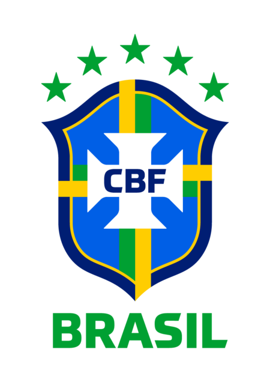
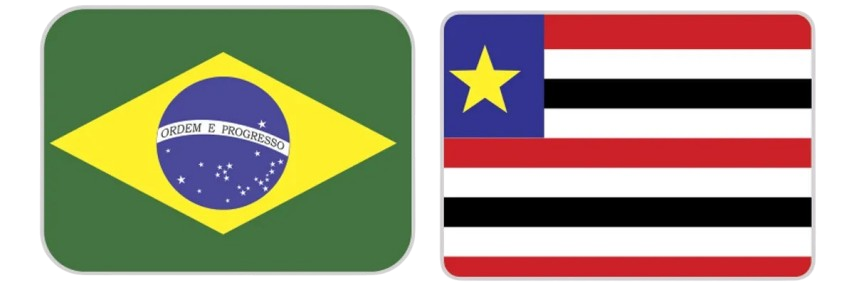
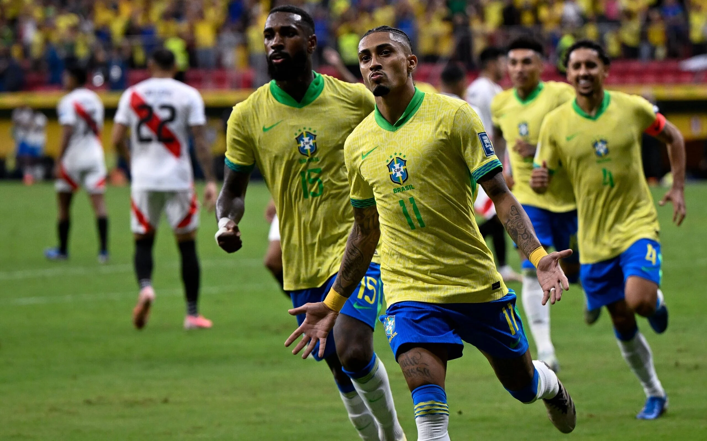
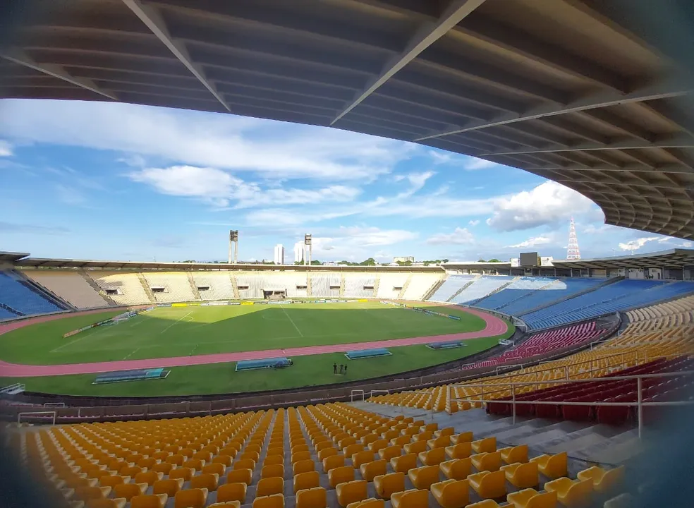
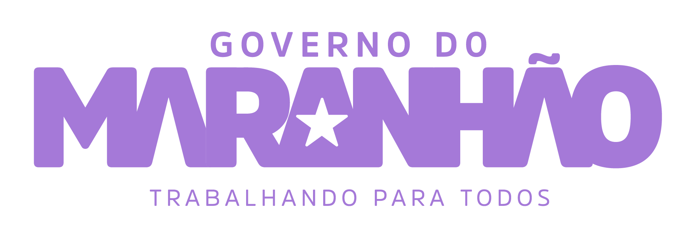

Jogo do Brasil confirmado no estádio Castelão em Março de 2025!
Compre seu ingressoApós muito tempo de especulação e espera, finalmente teremos um jogo oficial da seleção brasileira de futebol aqui no nosso estado, na ilha de São Luís. A confirmação veio na coletiva de imprensa de Ednaldo Rodrigues, presidente da Confederação Brasileira de Futebol (CBF), realizada hoje. "Estávamos há muito tempo organizando tudo para que uma partida fosse disputada no Maranhão. É um desejo nosso levar o Brasil para jogar em todo o país, aproximando o torcedor da sua seleção como antigamente", disse o presidente.

O jogo será contra a Colômbia, no dia 20 de março de 2025, uma quinta-feira, pela 13ª rodada das eliminatórias para a Copa do Mundo de 2026. Em uma parceria da Prefeitura de São Luís e o Governo do Estado do Maranhão com a CBF, o Brasil voltará a jogar no estado após mais de 23 anos, sendo esta a 5ª vez em terras ludovicenses. O primeiro jogo da seleção aqui foi em 1982, uma vitória sobre Portugal por 3 a 1. Quatro anos depois, retornou a São Luís e venceu o Peru por 4 a 0. Em 1998, empatou contra a Iugoslávia em 1 a 1. A última vez que o Brasil jogou no Maranhão foi em 2001, também pelas eliminatórias da Copa do Mundo. A equipe precisava vencer a Venezuela para se classificar para o Mundial de 2002. Graças aos gols de Luizão (2) e Rivaldo, a seleção venceu por 3 a 0 e carimbou no Castelão o passaporte para disputar a copa que posteriormente nos daria o penta!

Mais uma vez, o jogo será realizado no nosso maior estádio: o Castelão. Inaugurado em 1982, o estádio tem capacidade para cerca de 40 mil torcedores. Nomeado em homenagem ao ex-governador João Castelo, é o palco da maioria dos jogos do Sampaio Corrêa e de algumas partidas do Moto Club, dois dos principais clubes de futebol do estado e detentores das duas maiores torcidas. A partida entre Brasil e Uruguai, que aconteceria no dia 12 de novembro, chegou muito perto de ser realizada aqui na ilha, mas a decisão ficou para a Arena Fonte Nova, em Salvador. Foi identificado que, devido ao curto prazo, o estádio não estaria 100% preparado para receber uma partida desse porte. A equipe que analisou o estádio apontou diversos pontos importantes que seriam, e serão, necessários para a realização de uma partida da seleção: instalações de mídia, gramado, vestiários, pontos de acessibilidade e infraestrutura interna e externa, como acessos dos torcedores, cabines de rádio e TV, situação dos placares eletrônicos e do gramado. O Castelão passou por reformas ao longo dos anos para modernização e melhorias na infraestrutura, e agora, enfim, receberá um grande evento. Não perca!

E-mail: academy.secretaria@cbf.com.br